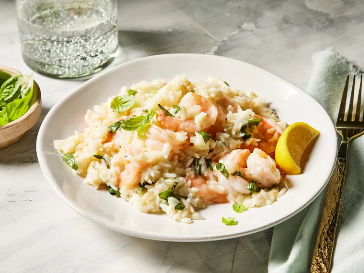
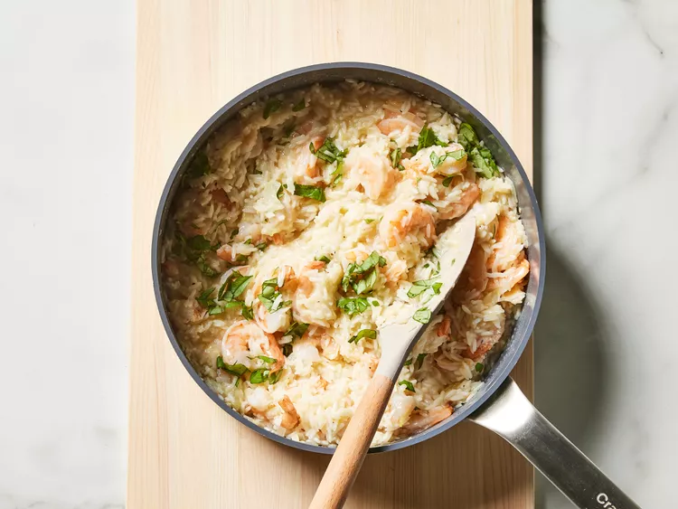

One-Pan Shrimp and Rice

Fancy, delicious and nutritive shrimp rice
With this special recipe you can feel like you're eating in a fancy restaurant at home.
TThis dish is simple, so the quality of each ingredient matters. Clean, fresh shrimp—the freshest you can buy—will bring the best flavor.
Ingredients
- 5 tablespoons unsalted butter, divided
- 1 yellow onion, finely chopped/li>
- 6 cloves garlic, finely chopped
- 1/4 cup dry white wine
- 2 cups chicken stock
- 2 teaspoons lemon zest
- 1 1/2 teaspoons kosher salt
- 1/4 teaspoon freshly ground black pepper
- 1 1/2 cups uncooked jasmine rice, rinsed
- 1 pound medium peeled, deveined raw shrimp
- 1 tablespoon freshly squeezed lemon juice
- 1/2 cup freshly grated Parmesan cheese
- 2 tablespoons finely chopped fresh basil, plus small leaves for garnish
- Lemon wedges for serving
Steps
- Gather all ingredients.
- Melt 1 tablespoon butter in a large nonstick skillet over medium. Add onion, and cook, stirring occasionally, until soft and translucent, about 3 minutes. Add garlic, and cook, stirring constantly, until garlic is fragrant and onions are lightly browned, about 1 minute. Stir in wine, and cook, stirring occasionally, until wine is reduced by half, about 3 minutes.
- Stir in chicken stock, lemon zest, salt, and black pepper. Bring to a boil over medium, and stir in rice. Cover and reduce heat to low. Simmer, undisturbed, until rice is just cooked through, 9 to 10 minutes. Add shrimp to rice in an even layer; drizzle with lemon juice, and dot with remaining 4 tablespoons butter. Cover and continue to cook over medium until shrimp and rice are cooked through, 5 to 6 minutes.
- Remove from heat. Stir in Parmesan cheese and basil. Garnish with lemon wedges and basil leaves.
